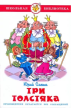

Три толстяка

Роман-сказка "Три толстяка" в такой же мере волшебная, как и философская. Для прозы Юрия Карловича Олеши характерны тонкая ирония и нетривиальные образы. Для среднего школьного возраста.

Роман-сказка "Три толстяка" в такой же мере волшебная, как и философская. Для прозы Юрия Карловича Олеши характерны тонкая ирония и нетривиальные образы. Для среднего школьного возраста.